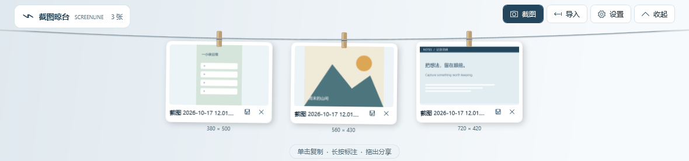

给 Windows 截图，留一处顺手的位置
把截图挂在屏幕上沿，
随手取用。
参考图、临时素材、刚截下的重要片段。
放在眼前，随手复制、预览、标注或拖出。
Windows 10 / 11 x64免费开源无需账户

从截图，到下一步
用完之前，
一直在手边。
留住临时用得上的图片，
让注意力回到正在做的事。
-
截下来，挂上去
用快捷键选区截图，或把已有图片拖入晾台。也可以在设置中添加截图目录，收集之后新增的图片。
Ctrl + Alt + S选区截图 -
移到上沿，随手取用
鼠标停在屏幕顶边即可展开。单击复制，双击看原图，长按约半秒进入标注；也能直接拖到支持的应用。
查看完整操作说明 -
用完，轻轻移出
点击卡片叉号即可移出晾台。原图和本地副本都会保留，误操作还能撤销，重启后也可以恢复上次移出。
Ctrl + Z撤销移出
轻量，也留有分寸
图片留在本机。
更新由你决定。
不用登录，也不用上传
没有账户和统计。图片、设置与日志保存在本地，截图和剪贴板内容不会上传。
提醒更新，等你确认
启动检查默认关闭，可在设置中开启。发现新版后由你确认下载安装，不会静默安装。
手动检查更新、已开启的启动检查及下载更新时会联网；优先使用国内更新源，查询失败后回退 GitHub。
Screenline for Windows
版本信息加载中Windows 10 / 11 x64 · 需要 .NET Framework 4.8
安装向导支持桌面快捷方式，可在 Windows 设置中卸载。
正在读取国内下载地址…
查看版本说明
正在读取最新版本说明…
开始之前
你可能想知道
支持哪些 Windows 版本？
面向 Windows 10 / 11 x64，需要 .NET Framework 4.8。Windows 11 已内置，较新的 Windows 10 通常也已安装。ARM64、混合 DPI 和部分多显示器场景尚未完成实机验证。
安装版和便携版怎么选？
安装版提供安装向导、开始菜单入口、可选桌面快捷方式和卸载入口，适合长期使用。便携版需要完整解压 ZIP 后运行 Screenline.exe，保留同目录下的配置文件。两个版本都把图片和设置存放在本机用户目录。
为什么 Windows 提示“无法识别的应用”？
程序与安装器目前尚未进行 Windows 代码签名，SmartScreen 可能显示提示。请确认下载来自本官网、项目 GitHub Release 或本项目国内 OSS 地址，并核对 SHA-256 校验文件。不了解提示时，可先查看源码和Windows 使用说明。
它会自动读取我的剪贴板吗？
“收集剪贴板中的纯图片”默认关闭，需要在设置中主动开启。默认仅监控截图目录中启动监控后新增的图片，不会扫描导入旧文件。你也可以从托盘主动粘贴一张剪贴板图片。
移出截图或卸载，会删除我的图片吗？
移出晾台不会删除原图或本地副本，也不会释放磁盘空间；卸载保留本地图片与设置。数据位于 %LOCALAPPDATA%\Screenline。需要清理时，请先退出程序，再备份或整理该目录。
如何反馈问题或参与开发？
在 GitHub Issues 提交问题，附上 Windows 版本、显示器缩放比例和复现步骤。提交截图与日志前，请检查其中的个人信息。项目采用 MIT 许可证，欢迎查看源码和提交改进。